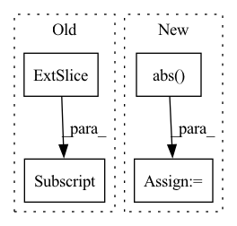

Pattern ID :10171

Before Change
generated_noise = generated_noise.int()
bright_regions = img.sum(1) > brightness_threshold * img.shape[1]
for ch in range(img.shape[1]):
gnch = generated_noise[:, ch]
gnch[bright_regions] = gnch[bright_regions] * -1
generated_noise[:, ch] = gnch
anom = (anom.int() + generated_noise).clamp(0, 255).byte()
After Change
diff = ((anom.int() + generated_noise).clamp(0, 255) - anom.int())
diff = diff.reshape(anom.size(0), -1).sum(1).float().div(np.prod(anom.shape)).abs()
diffi = ((anom.int() - generated_noise).clamp(0, 255) - anom.int())
diffi = diffi.reshape(anom.size(0), -1).sum(1).float().div(np.prod(anom.shape)).abs()
inv = [i for i, (d, di) in enumerate(zip(diff, diffi)) if d < invert_threshold and di > d]
generated_noise[inv] = -generated_noise[inv]
anom = (anom.int() + generated_noise).clamp(0, 255).byte()
In pattern: SUPERPATTERN
Frequency: 3
Non-data size: 4
Instances
Fragment ID: 35953605
Project Name: liznerski/fcdd
Commit Name: d110aa8b141dc13f47156da913a6b4f9d64ddc74
Time: 2020-10-12
Author: p_liznersk13@cs.uni-kl.de
File Name: python/fcdd/datasets/online_superviser.py
M Class Name: OnlineSuperviser
N Class Name: OnlineSuperviser
M Method Name: __malformed_normal(8)
N Method Name: __malformed_normal(8)
M Parent Class: ImgGTTargetTransform
N Parent Class: ImgGTTargetTransform
M File Name: python/fcdd/datasets/online_superviser.py
N File Name: python/fcdd/datasets/online_superviser.py
M Start Line: 139
M End Line: 146
N Start Line: 143
N End Line: 151
'>
Before Change
_, latent = model.extract_latent(input)
print(latent.size())
real = latent[:,:n_bases//2,:]
imag = latent[:,n_bases//2:,:]
power = real**2+imag**2
plt.figure()
After Change
_, latent = model.extract_latent(input)
print(latent.size())
power = torch.abs(latent)
plt.figure()
plt.pcolormesh(power[0].detach().cpu().numpy(), cmap="bwr")
plt.colorbar()
'>
Fragment ID: 35953586
Project Name: tky823/dnn-based_source_separation
Commit Name: 3ca1f1e5986cebb7df022f46f176de179d4cdbb6
Time: 2021-09-23
Author: 40362510+tky823@users.noreply.github.com
File Name: src/models/tasnet.py
M Class Name: AnonimousClass
N Class Name: AnonimousClass
M Method Name: _test_tasnet_base(0)
N Method Name: _test_tasnet_base(0)
M Parent Class:
N Parent Class:
M File Name: src/models/tasnet.py
N File Name: src/models/tasnet.py
M Start Line: 507
M End Line: 540
N Start Line: 319
N End Line: 338
'>
Before Change
activation_index = len(self.activations) - self.grad_index - 1
activation = self.activations[activation_index]
values = torch.sum(activation * grad, dim=0, keepdim=True).sum(dim=2, keepdim=True).sum(dim=3, keepdim=True)[0, :, 0, 0].data
// Normalize the rank by the filter dimensions
values = values / (activation.size(0) * activation.size(2) * activation.size(3))
if activation_index not in self.filter_ranks:
After Change
values = values / (activation.size(0) * activation.size(2) * activation.size(3))
if activation_index not in self.filter_ranks:
self.filter_ranks[activation_index] = torch.FloatTensor(activation.size(1)).zero_().to(env["device"])
values = values.abs()
values = values / torch.sqrt(torch.sum(values ** 2))
self.filter_ranks[activation_index] += values
self.grad_index += 1
'>
Fragment ID: 35953610
Project Name: ain-soph/trojanzoo
Commit Name: 2c7f3682ae92a833ce2f3432fa643322eb2bbae5
Time: 2020-09-06
Author: ain-soph@live.com
File Name: trojanzoo/defense/backdoor/fine_pruning.py
M Class Name: FilterPrunner
N Class Name: FilterPrunner
M Method Name: compute_rank(2)
N Method Name: compute_rank(2)
M Parent Class:
N Parent Class:
M File Name: trojanzoo/defense/backdoor/fine_pruning.py
N File Name: trojanzoo/defense/backdoor/fine_pruning.py
M Start Line: 98
M End Line: 99
N Start Line: 75
N End Line: 82